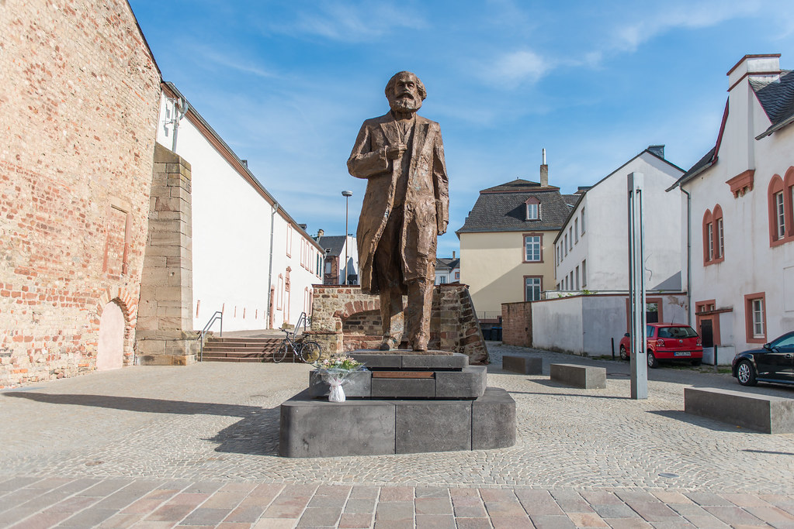
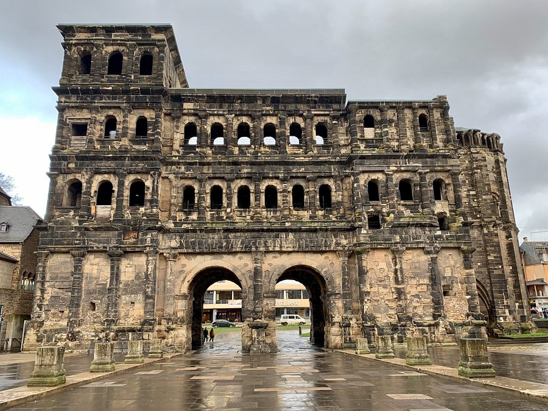

Karl Marx, född 5 maj 1818 i Trier i Preussen i nuvarande Tyskland,
död 14 mars 1883 i London i Storbritannien, var en filosof, journalist, historiker,
samhällsvetare, ekonomikritiker, arbetskritiker och humanist.Marx
betraktas ofta som en klassisk teoretiker inom sociologin. Delar av Marx och Engels teorier gav
upphov till den politiska teori som kom att kallas marxism.

Porta Nigra, Svarta porten, är en romersk stadsport i Trier. Den uppfördes i grå sandsten från
år 186 till 200 e.Kr. Under romartiden var Porta Nigra en av stadens fyra portar: Porta Nigra i
norr, Porta Alba i öster, Porta Media i söder och Porta Inclyta i väster. Av dessa återstår idag
endast Porta Nigra. År 1986 fördes Porta Nigra upp på Unescos världsarvslista.
The High Cathedral of Saint Peter in Trier, or Trier Cathedral (German: Trierer Dom), is a Roman
Catholic cathedral in Trier, Rhineland-Palatinate, Germany. It is the oldest church in Germany
and the largest religious structure in Trier, notable for its long life span and grand design.
The central part of the nave was built of Roman brick in the early fourth century, resulting in
a cathedral that was added onto gradually in different eras.